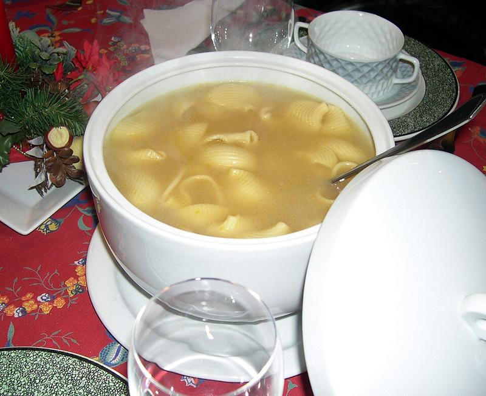
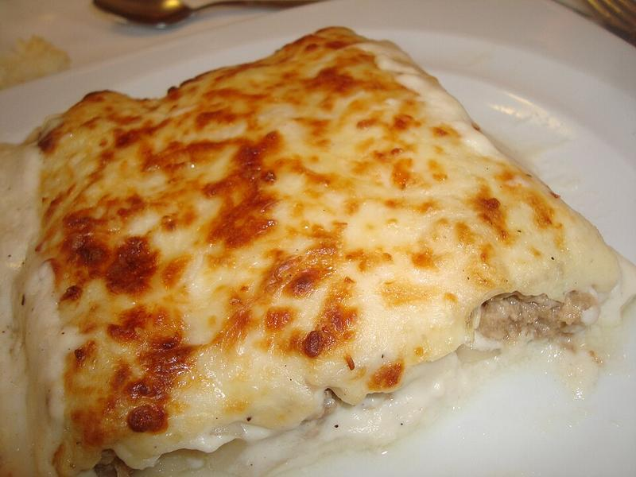

Pa amb tomàquet
Un clàssic imprescindible de la cuina tradicional catalana.
Veure receptaExplora una selecció de plats tradicionals catalans, elaborats amb ingredients autèntics i molta tradició.
Un clàssic imprescindible de la cuina tradicional catalana.
Veure recepta
El postre més emblemàtic i dolç de tota Catalunya.
Veure recepta
Verdures rostides amb un sabor únic exquisit.
Veure recepta
El plat d’hivern més tradicional de la cuina Catalana.
Veure receptaUn rostit clàssic amb aromes de tradició i festa major.
Veure recepta
Els canelons tradicionals de sempre per Sant Esteve.
Veure recepta